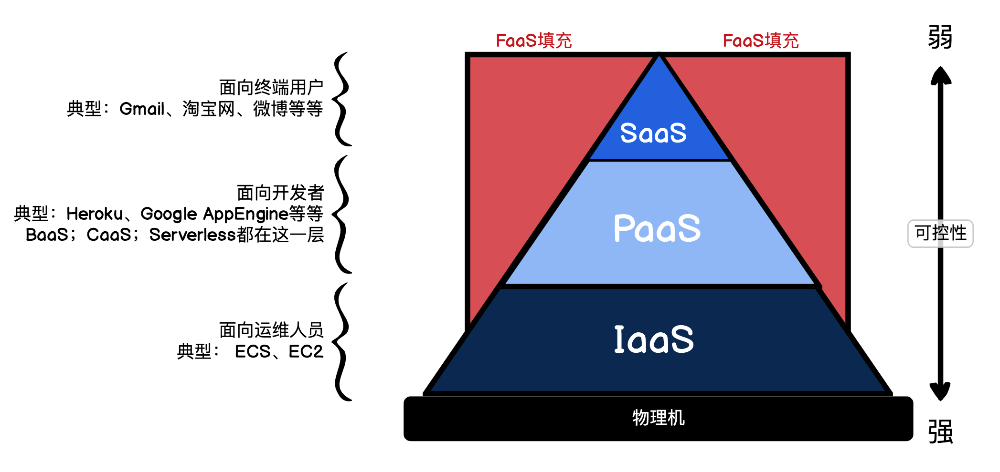

Serveless
Serveless的含义是服务端免运维。
- server限定Serverless解决问题的边界，即服务端运维。
- less表明Serverless解决问题的目的，即免运维NoOps。通过全知全能的服务，覆盖研发部署需要的所有需求，从而减少研发人员对服务运维的感知。
狭义上的Serverless = Serverless computing架构 = FaaS架构 = Trigger（事件驱动）+ FaaS（函数即服务）+ BaaS（后端即服务，持久化或第三方服务）= FaaS + BaaS
广义Serverless = 服务端免运维 = 具备Serverless特性的云服务
- 无需用户关心服务端的事情（容错、容灾、安全验证、自动扩缩容、日志调试等等)。
- 按使用量（调用次数、时长等）付费，低费用和高性能并行，大多数场景下节省开支。
- 快速迭代&试错能力（多版本控制，灰度，CI&CD等等）。
优势
第一是降低服务成本，尤其是降低长尾应用的资源消耗。在为服务架构下，每个长尾应用都需要占用独立的虚拟机。
第二在于提高研发效能，SFF（Serverless For Frontend）可以让前端同学自行负责数据接口的编排，微服务BaaS化则让我们的后端同学更加关注领域设计。
FaaS
FaaS（Function as a Service）函数即服务，也称作Serverless Computing。我们可以通过FasS随时随地创建、使用、销毁一个函数。
创建过程
通常函数的使用过程需要先从代码加载到内存，也就是实例化，然后被其它函数调用时执行。FaaS同样，函数需要实例化，然后被触发器Trigger或者被其他的函数调用。
二者最大的区别就是在Runtime，也就是函数的上下文。FaaS的Runtime是预先设置好的，其中加载的函数和资源都是云服务商提供的，我们可以使用却无法控制，函数调用完后这个临时Runtime和函数一起销毁。
这里引出一个问题，FaaS的官方Runtime无法支持业务需求要依赖特殊的函数库或二进制包，而且像Java等语言在代码包较大的情况下，FaaS启动速度很慢。
当我们遇到FaaS无法解决的场景，我们就可以考虑下沉一层，使用FaaS的底层支撑技术Docker容器。Docker可以将应用代码和代码依赖的Runtime一起打包成一个Docker镜像。这个镜像可以在云上、自己的笔记本电脑、同事的电脑上运行，完全不用担心环境依赖的问题，因为应用的依赖也打包在一起了。
访问过程
用户第一次访问HTTP函数触发器时，函数触发器会Hold住用户的HTTP请求，并产生一个HTTP Request事件通知函数服务。
函数服务检查有没有闲置的函数实例，如果没有函数实例，就去函数代码仓库中拉取代码，初始化并启动一个函数实例，传入这个HTTP Request对象作为函数的参数，执行函数。
再进一步，函数执行的结果HTTP Response返回函数触发器，函数触发器再将结果返回给客户端。
处理持久化数据
以MySQL为例，后端服务最好是将FaaS操作的数据库的命令，封装成HTTP的OpenAPI，提供给FaaS调用，自己控制这个API的请求频率以及限流降级。而后端服务本身则可以通过连接池、MySQL集群等方式去优化。
冷启动
冷启动本来是PC上的概念，它是指关闭电源后，PC再启动仍然需要重新加载BIOS表，也就是从硬件驱动开始启动，因此启动速度很慢。
现在的云服务商线上物理服务器断电重启几乎是不太可能的。FaaS中的冷启动是指从调用函数开始到函数实例准备完成的整个过程，需要100～700毫秒的冷启动时间。
一旦更新代码，云服务商就会开始调度资源，下载代码构建函数实例的镜像。请求第一次访问时，云服务商就可以利用构建好的缓存镜像，直接跳过冷启动的下载函数代码步骤，从镜像启动容器，这个也叫预热冷启动。
如果我们有些业务场景对响应时间比较敏感，我们就可以通过预热冷启动或预留实例策略，加速或绕过冷启动时间。
优势
FaaS与应用托管PaaS平台对比，最大的区别在于资源利用率，这也是FaaS最大的创新点。FaaS的应用实例可以缩容到0，而应用托管PaaS平台则至少要维持1台服务器或容器。
函数在第一次调用之前，实际的服务器占用为0。直到用户第一次HTTP数据请求过来时，函数服务才被HTTP事件触发，启动函数实例。没有用户请求时，函数服务没有任何的函数实例，也就不占用任何的服务器资源。而应用托管PaaS平台，创建应用实例的过程通常需要几十秒，为了保证你的服务可用性，必须一直维持着至少一台服务器运行你的应用实例。
FaaS函数类型分类
用完即毁型：函数实例准备好后，执行完函数就直接结束。这是FaaS最纯正的用法。
常驻进程型：函数实例准备好后，执行完函数不结束，而是返回继续等待下一次函数被调用。这里需要注意，即使FaaS是常驻进程型，如果一段时间没有事件触发，函数实例还是会被云服务商销毁。
数据编排
目前最广泛的设计模式就是MVC模式。随着前端MVVM框架越来越火，前端View层逐渐前置，发展成SPA单页应用；后端Control和Model层逐渐下沉，发展成面向服务编程的后端应用。
这种情况下，前后端更加彻底地解耦，前端开发可以依赖Mock数据接口完全脱离后端限制，而后端的同学则可以面向数据接口开发，但这也产生了高网络I/O的数据网关层。
因此诞生了Node.js的BFF层(Backend For Frontend)，将后端数据和后端接口编排，适配成前端需要的数据结构，提供给前端使用。
因为BFF层只是做无状态的数据编排，所以我们完全可以用FaaS用完即毁型模型替换掉BFF层的Node.js应用，也就是最近圈子里老说的那个新名词SFF（Serverless For Frontend）。
服务编排
服务编排和数据编排很像，主要区别是对云服务商提供的各种服务进行组合和加工。
FaaS拓展了我们可以使用SDK边界，其最大一个亮点就是语言无关性，支持使用不同的编程语言实现不同的函数，再通过编排组装在一起。
快速扩容
Stateful & Stateless
网络拓扑中的节点，我们可以根据是否保存状态分为Stateful和Stateless。
Stateful是有状态的节点，用来保存状态、存储数据，因此Stateful节点我们需要额外关注，需要保障稳定性，不能轻易改动。
Stateless是无状态的节点，Stateless不存储任何状态，或者只能短暂存储不可靠的部分数据。
Stateless节点没有任何状态，因此在并发量高的时候，我们可以对Stateless节点横向扩容，而没有流量时可以缩容到0。Stateful节点则不行，如果面对流量峰值峰谷的流量差比较大时，我们要按峰值去设计Stateful节点来抗住高流量，没有流量时我们也要维持开销。如果我们的网络拓扑节点想自由扩缩容，则需要将这个节点的数据操作外移到专门的Stateful节点。
纵向扩缩容 & 横向扩缩容
纵向扩缩容就是提升单机性能，价格上升曲线陡峭，我们通常要慎重选择；横向扩缩容就是提升机器数量，价格上升平稳，也是我们常用的扩缩容方式。
回到进程模型，用完即毁型是天然的Stateless，因为它执行完就销毁，无法单纯用它持久化存储任何值；常驻进程型则是天然的Stateful，因为它的主进程不退出，主进程可以存储部分值。
后端BaaS化
关于FaaS访问Stateful节点的方式，我们希望Stateful节点对FaaS提供数据接口，而不是单纯指令。以数据库为例，数据库连接会增加FaaS的额外开支。同时为了方便后端工程师开发，我们需要将Stateful节点BaaS化
解耦数据库
解耦数据库的核心就是让数据启动时，可以更新到最新的数据库。在其中一个数据库更新时，通知另外一个数据库更新。
这里引出一个关键的Stateful对象：消息队列。它是一个稳定的绝对值得信赖的Stateful节点，而且对应用来说消息队列是全局唯一的。我们可以通过消息队列解决数据库和副本之间的同步问题。
领域驱动设计拆解微服务
DDD（领域驱动设计）是一套方法论：通过对业务分层抽象，分析定义出领域模型，用领域模型驱动设计系统，最终将复杂业务模型拆解为独立运维的领域模型。
我们应该思考的是如何整体优化动态网络：减少核心节点，保护核心节点，降低网络深度等等。
无需在项目启动初期太过纠结应该如何去拆解微服务，而应该持续关注并思考每个微服务节点的合理性。像看待动态网络一样，持续地调整优化，去除核心节点，最终伴随业务的发展阶段，达到各个阶段的稳定动态网络结构。
工作流合并服务数据
拆解后的架构是个动态网络，如何合并或者编排呢？
可以像SFF那样通过传统的函数，将每个HTTP数据的请求结果通过数组或对象加工处理，再将这些结果返回。
也可以通过工作流的方式进行编排。将用户的请求想象成我们的呼吸系统，我们的肺就是SFF，而微服务和FaaS节点就是需要氧气的各个器官。我们吸一口气，氧气进入肺部，血液循环将氧气按顺序流经我们每个器官，这就是请求链路。每个器官一接收到新鲜血液，就会吸取氧气返回二氧化碳，最终血液循环将二氧化碳带到肺部呼出，这个就是数据返回链路。我们的各个器官，就被请求链路通过新鲜血液到来的这个事件串联起来了，这个就是事件流，也就是用一个个事件去串联FaaS或微服务。
附 XaaS

SaaS(软件即服务(Software as a Service))
PaaS(平台即服务(Platform as a Service))
IaaS(基础设施即服务(Infrastructure as a Service))
CaaS(容器即服务(Containers as a Service))
FaaS(方法即服务(Functions as a Service))